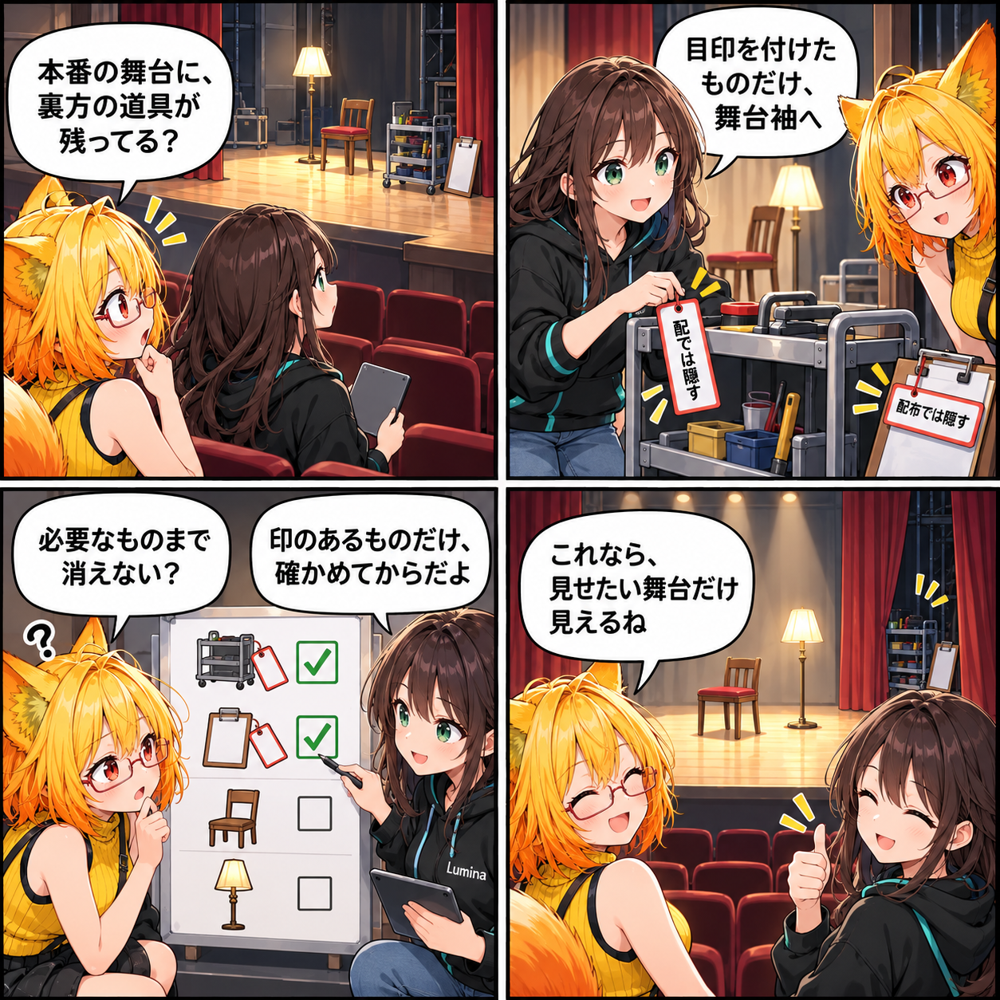

2026.10.12 / Development Log
表舞台には、必要なものだけ置く日
配布版で不要な開発用UIだけを明示的に隠し、利用者が使う画面を読みやすく整えました。
開発実績の記録です。集計期間は 2026-10-11 03:00:00 JST から 2026-10-12 02:59:59 JST。対象ブランチは main、集計終了時点のHEADは
1bde2614ac8f7dabe74db482c41e476b89a8dc73、対象は3コミットです。未コミットの変更は含めていません。
配布版の画面を、明示的に選んで整える
利用者に見せる画面と、開発中の確認に使うUIは役割が違います。そこで、UI要素へ「配布時には隠す」目印を付けられる仕組みを追加しました。配布版では印のある要素だけを非表示にするため、通常の利用に必要なUIまでまとめて消えることはありません。
確認してから、舞台袖へ下げる
対象を確認して設定するためのUnityエディタ用ウィンドウを追加し、表示制御を確かめるテストも用意しました。どの要素を配布版から外すかを意図して選べるようにし、開発用の確認導線を利用者向け画面へ残さないための土台を整えています。
デスクトップ操作と取り込みも見直す
同じ期間にはデスクトップUIのナビゲーションを修正し、古い操作を整理しました。UnityPackageから読み込む静的アクセサリーについても、階層を復元する処理を改善しています。画面の見せ方だけでなく、そこへ届くまでの操作と取り込みの流れも整える更新です。
4コマの裏話
今回は舞台転換の物語にしました。裏方の道具を全部なくすのではなく、印を付けて確認したものだけを舞台袖へ下げる。配布版の表示制御が持つ「必要なものは残す」という性質を、短い場面として描いています。
まとめ
配布時に隠すUIを明示的に管理し、設定用ウィンドウとテストで確認できるようにしました。デスクトップの操作整理とアクセサリー階層の復元改善も合わせ、利用者が触れる画面をより素直に見せるための調整を進めています。
本日のひとこと
見せたいものを残すために、下げるものを選ぼう。